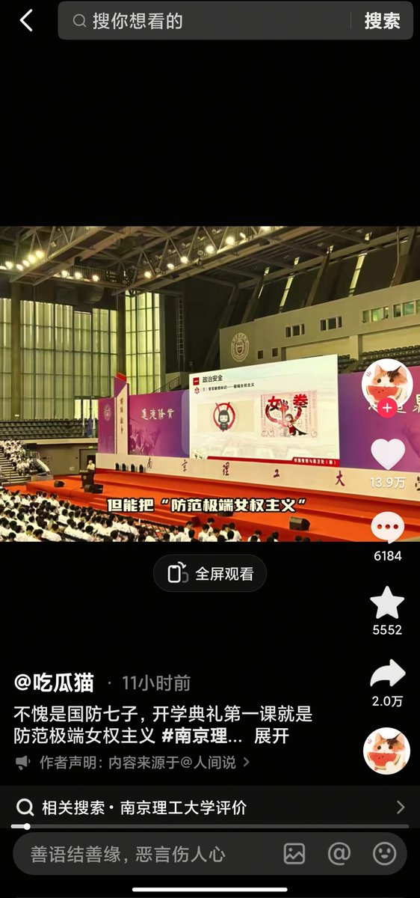
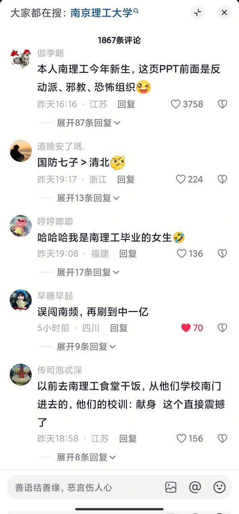
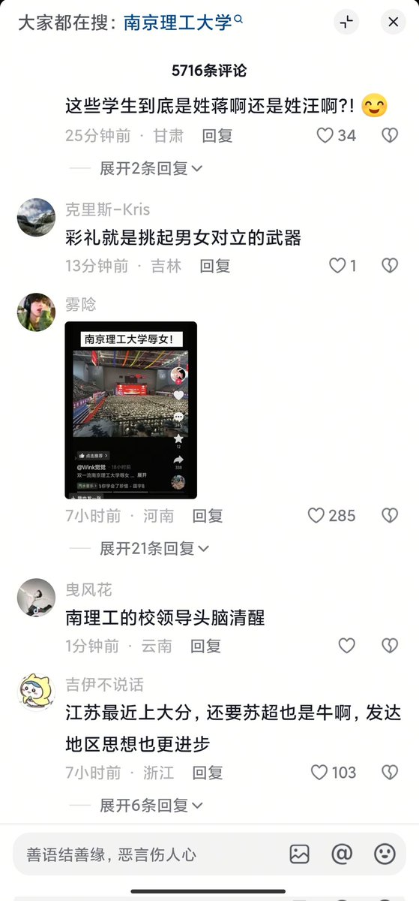
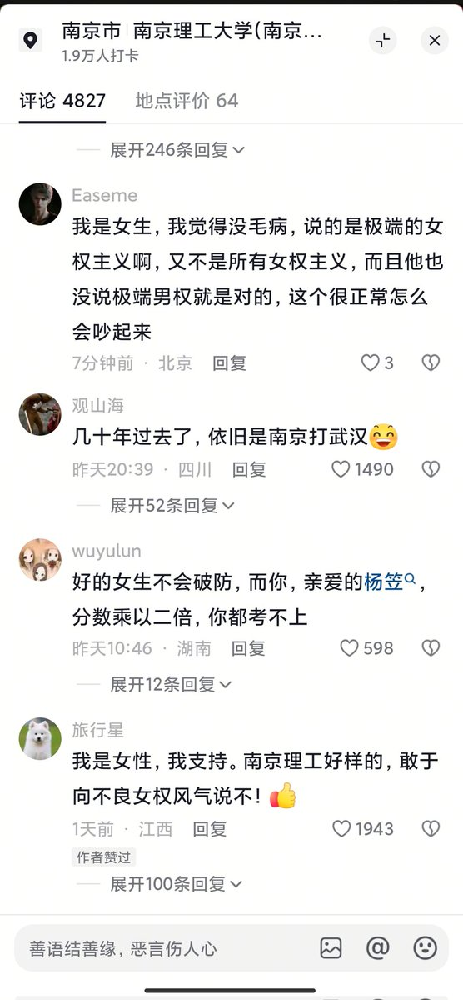

𝐀𝐬𝐡𝐥𝐞𝐲 𝐁𝐥𝐨𝐜𝐤🍥🌹🇹🇼🏳️⚧️
@bolckAshley
以後見到個從這個學校出來的我都能拿這個事情笑話他們學校一次🤣




咸福宫日记
@Alantur57426778
南理事件在抖音、B站甚至小红书下的评论区基本已经被顺直男攻占了，微博上也是不洗内裤之怒等人在欢呼。
好奇怪呀，为什么几乎看不到女权乃至多少女性对此事的反应呢？平时推特隔三差五就是请男同不要把屁眼叫做B，小红书打耽美嘲腐女嚷嚷还女词的笔记轻而易举过万赞，但对这事却格外安静？ https://t.co/jHyg4hwkZ4